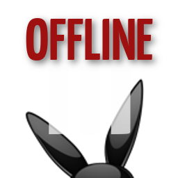

<div class="ui-corner-all custom-corners">
      
    <div class="ui-bar ui-bar-a">
            <h3>No Connection: you are offline</h3>
    </div>
      
    <div class="ui-body">
        <div style="text-align:center; padding: 0px 20px;">
            
        </div>
    </div>
</div>
